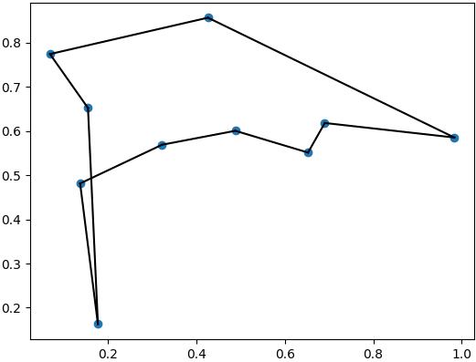

Getting Started¶
Installation¶
A key feaure of PottsPlayground is support for GPU acceleration, however PottsPlayground can compile and run without GPU support as well. For now, PottsPlayground is available as a source install via pip install PottsPlayground. If the setup process finds nvcc (the compiler for Nvidia GPU support) PottsPlayground will attempt to build for GPU execution; otherwise, it will build for CPU only. Note that even if nvcc is installed, it might not be on the system path. PottsPlayground prints a GPU status report when imported, which will indicate if it was built with or without GPU support, and whether or not the module can find a GPU to use.
Using Built-in Tasks¶
A few example tasks are built-in as a reference and for easy benchmarking. To create a random instance of the traveling salesman problem and “solve” for it’s minimum tour length, all one needs to do is:
import PottsPlayground
PottsTask = PottsPlayground.Tasks.TravelingSalesman(ncities=10, ConstraintFactor=1.5)
temp = PottsPlayground.Schedules.SawtoothTempLog2Space(MaxTemp=1., MinTemp=0.05, nTeeth=3, nIters=1e4)
results = PottsPlayground.Anneal(PottsTask, temp)
final_best_soln = results['MinStates'][-1,:]
PottsTask.DisplayState(final_best_soln)
Which should yield a plot of a tour somewhat like this:
Which is obviously not an optimal solution, but increasing the number of iterations, details of the annealing algorithm, etc. can get you there.
Creating a New Task¶
New/custom tasks can be created using the BaseTask class, which is what the built-in examples do internally. For example, PottsPlayground can be used to create a 3-spin Ising model of an AND gate like so:
import numpy
import PottsPlayground
from PottsPlayground.Kernels import BinaryQuadratic as BQK
#manually create an Ising model of an logical AND gate, C = A&B
print("C = A & B")
andgate = PottsPlayground.Tasks.BaseTask()
#three variables, each which take on values of 0 or 1
andgate.SetPartitions([2,2,2])
andgate.InitKernelManager()
#connect A to B
andgate.AddKernel(BQK, i=0, j=1, weight=1)
andgate.AddKernel(BQK, i=1, j=0, weight=1)
#connect A to C
andgate.AddKernel(BQK, i=0, j=2, weight=-2)
andgate.AddKernel(BQK, i=2, j=0, weight=-2)
#connect B to C
andgate.AddKernel(BQK, i=2, j=1, weight=-2)
andgate.AddKernel(BQK, i=1, j=2, weight=-2)
andgate.biases[0,:] = [0,0]
andgate.biases[1,:] = [0,0]
andgate.biases[2,:] = [0,3]
andgate.CompileKernels()
#run the model at a constant temperature to capture statistics:
temp = PottsPlayground.Schedules.constTemp(niters=1e6, temp=1)
results = PottsPlayground.Anneal(andgate, temp, nReports=int(1e4))
#plot the distribution of states:
samples = results["AllStates"]
sample_indices = samples[:,0,0]+2*samples[:,0,1]+4*samples[:,0,2]
unique, counts = numpy.unique(sample_indices, return_counts=True)
for i, c in zip(unique, counts):
pr = c/sample_indices.shape[0]
print("A=%i, B=%i, C=%i -> Pr=%.3f"%(i%2, (i/2)%2, (i/4)%2, pr))
Which when run should yield a set of probabilities where the valid states where C = A & B is true are all equally likely, and the invalid states are unlikely:
C = A & B
A=0, B=0, C=0 -> Pr=0.197
A=1, B=0, C=0 -> Pr=0.188
A=0, B=1, C=0 -> Pr=0.193
A=1, B=1, C=0 -> Pr=0.072
A=0, B=0, C=1 -> Pr=0.008
A=1, B=0, C=1 -> Pr=0.073
A=0, B=1, C=1 -> Pr=0.074
A=1, B=1, C=1 -> Pr=0.194
In general, sucessfully representing more complicated tasks as Potts models benefits from more structured code for calculating weights and tabulating the mapping between Potts spins and task semantics.